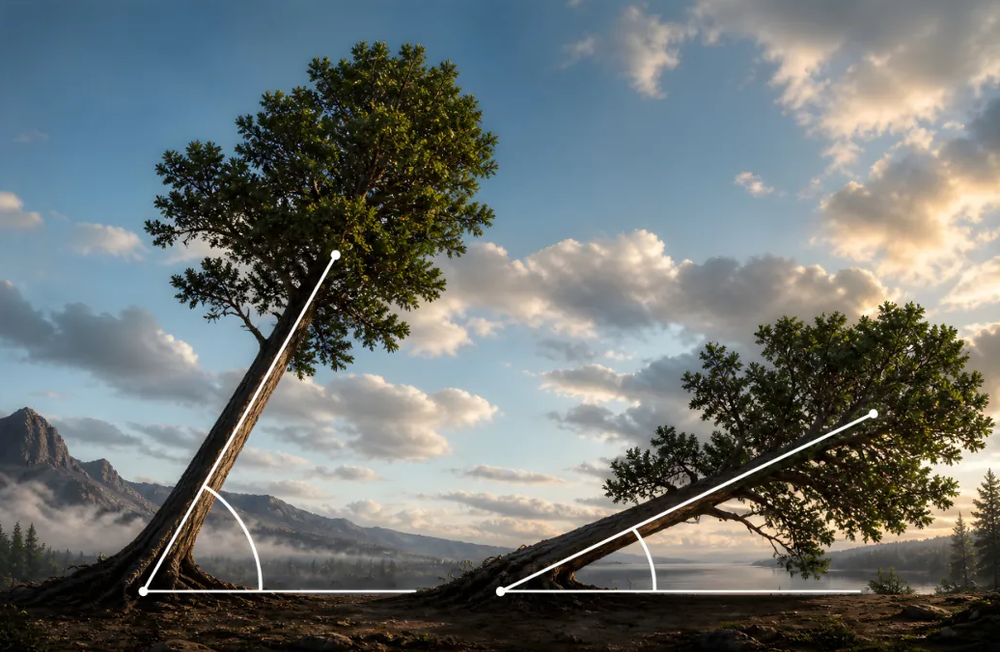

השלימו את ההיגדים — הזוויות שבין העצים
חוברת זוויות לכיתה ז — דפי עבודה
2

א.בכל אחד מן העצים נוצרת בין גזע העץ לבין ה .
ב.קודקוד הזווית נמצא בנקודה שבה ה פוגש את הקרקע.
ג.אחת הקרניים של הזווית היא קו ה , והקרן השנייה היא קו ה .
ד.הזווית של העץ הימני נראית יותר מן הזווית של העץ השמאלי.
ה.העץ השמאלי עומד זקוף יותר, ולכן הזווית שלו עם הקרקע נראית יותר.
מחסן מילים:
קרקע
גזע
זווית
קרקע
גזע
קטנה
גדולה
קודקוד
קרניים